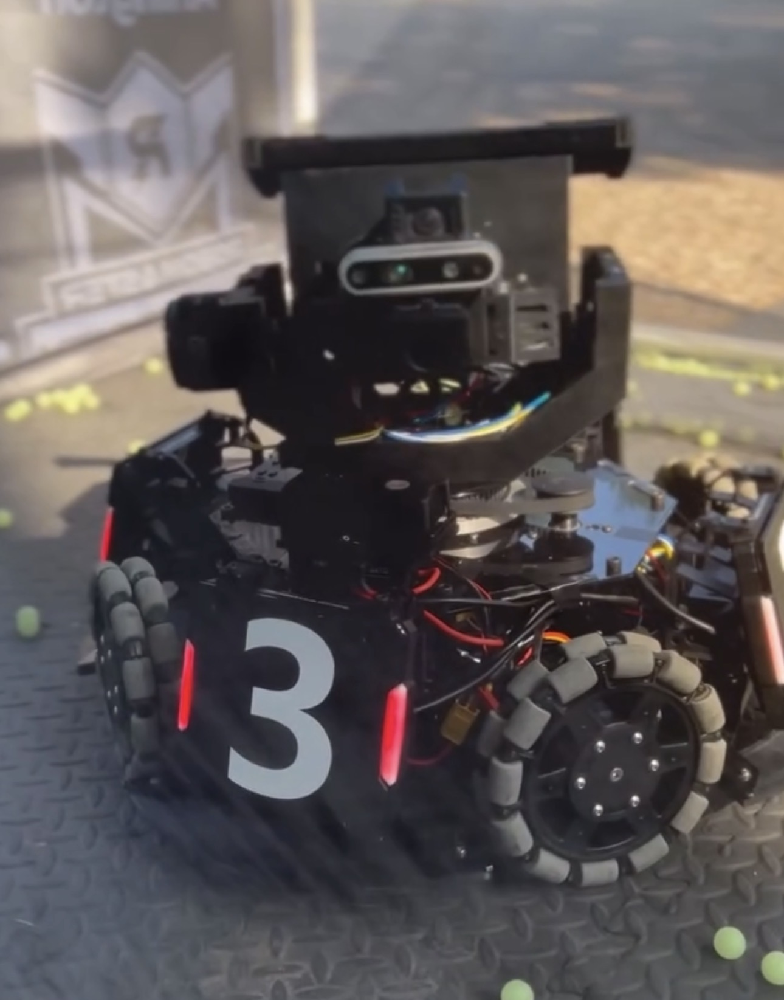
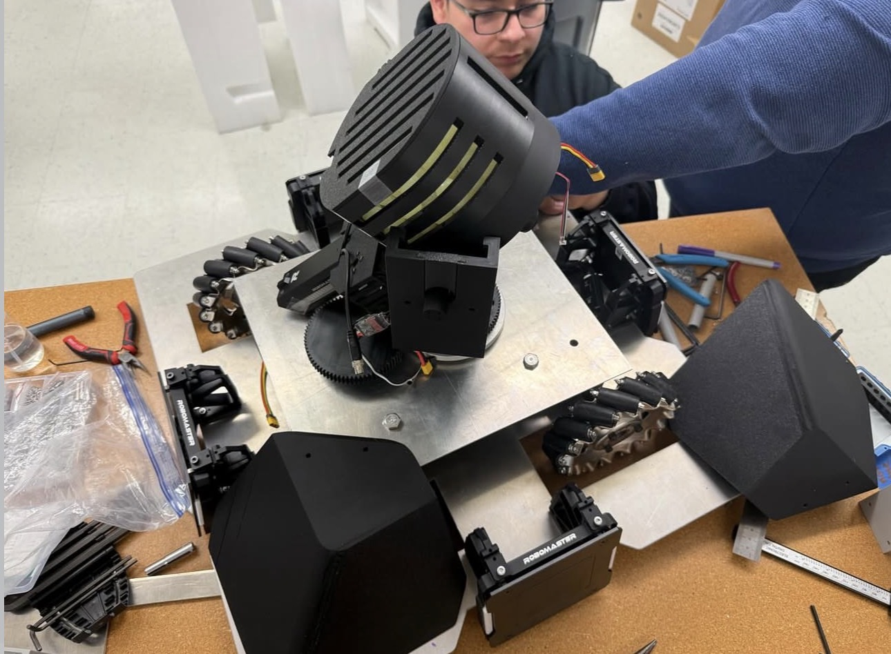
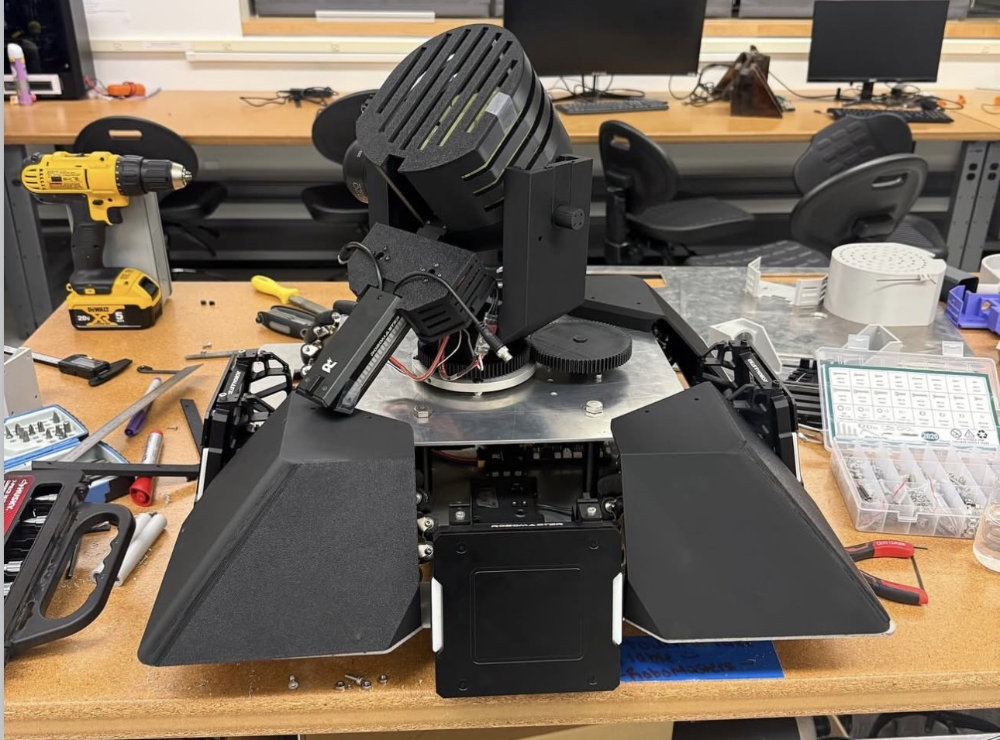
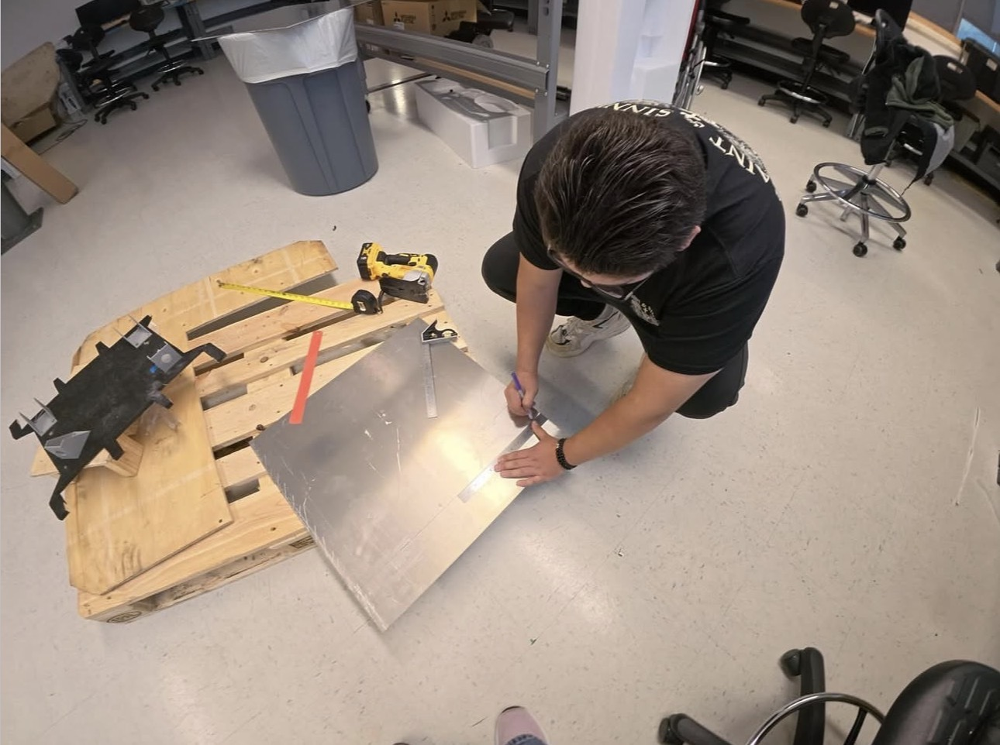
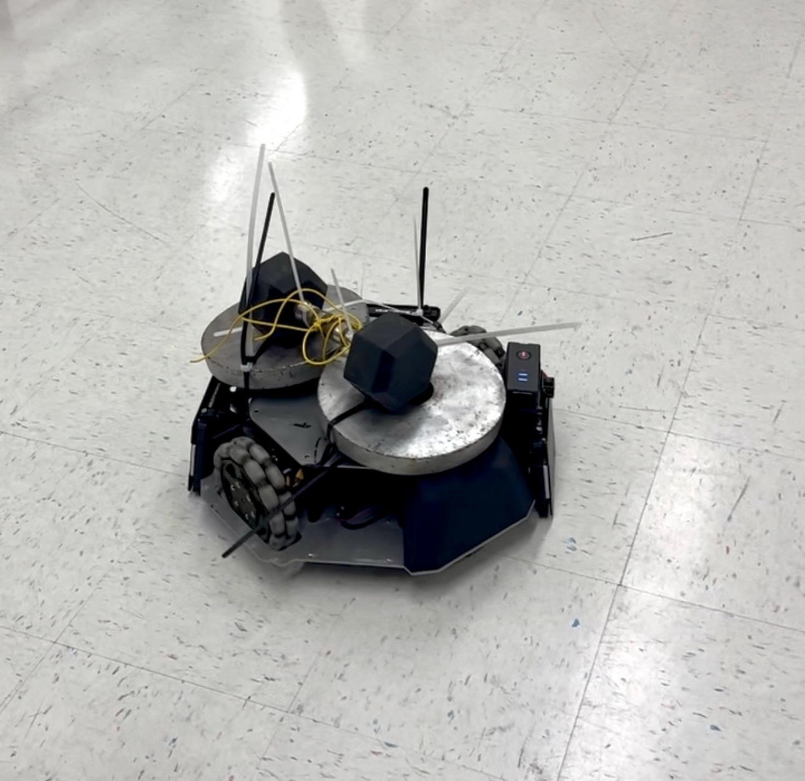

Robotics Engineering Project
RoboMasters Standard Robot
Competitive robotics platform developed through my RoboMasters team focused on drivetrain integration, stabilization systems, modular mechanical design, and embedded control architecture for high-speed autonomous and operator-controlled performance.
Tools & Technologies
Project Overview
The RoboMasters Standard Robot was developed as part of the UTA RoboMasters competitive robotics team. The robot was designed to combine high-speed maneuverability, precision targeting, and reliable subsystem integration within a fast-paced combat robotics environment.
Development required coordination between mechanical, electrical, and software systems while balancing weight, structural rigidity, maintainability, and overall performance. My work focused primarily on mechanical design, subsystem integration, gimbal development, prototype assembly, and iterative testing.
Through multiple design cycles, the robot evolved into a modular platform capable of supporting drivetrain, stabilization, and control subsystems while maintaining reliability under aggressive operating conditions.
Engineering Contributions
1. Gimbal Structural Design & Ownership
As Gimbal Team Lead, I led the mechanical design and development of the gimbal support structure responsible for mounting and stabilizing the targeting system. I designed the primary structural arm that houses the gimbal assembly, ensuring it met requirements for rigidity, weight efficiency, range of motion, and integration with surrounding subsystems.
The design required careful balancing of structural performance and packaging constraints, as it needed to coexist with turret mechanisms, drivetrain components, and electrical systems developed by other teams. Multiple CAD iterations were created in SolidWorks to refine geometry, improve stiffness, and optimize clearances.
SolidWorks Simulation was used throughout development to evaluate stress distribution, identify weak points, and validate design changes before fabrication. Iterations were driven by simulation results as well as real-world fitment and assembly feedback.
2. Chassis-Integrated Mechanical Design
I designed and developed multiple structural components integrated into the robot chassis, including mounting brackets, support structures, and custom clamping systems used to secure critical subsystems such as batteries and mechanical assemblies.
These designs were developed in coordination with the chassis team, ensuring compatibility with machined aluminum chassis plates and overall system architecture. Consideration was given to load paths, vibration resistance, manufacturability, and ease of maintenance during repeated assembly cycles.
3. Prototyping, Manufacturing & Heat-Set Inserts
I supported rapid prototyping efforts using 3D printing to validate mechanical designs before final manufacturing. Many printed components were reinforced using brass heat-set threaded inserts to create durable threaded connections capable of withstanding repeated assembly and disassembly.
I also worked with machined metal components used in high-stress areas of the robot, particularly within the chassis system. Aluminum was selected as the primary chassis material due to its balance of strength, weight, and cost efficiency, while alternative materials such as carbon fiber were evaluated during early design discussions.
4. Systems Integration & Cross-Team Collaboration
I played a key role in integrating mechanical subsystems with turret, chassis, and electrical systems developed by other teams. This required resolving alignment issues, interference constraints, and packaging conflicts within a tightly constrained robot layout.
Close collaboration with chassis, turret, and coding teams ensured that mechanical designs supported system-level requirements such as projectile feeding reliability, drivetrain clearance, and electronics placement.
5. Software & Controls Support
In addition to mechanical responsibilities, I contributed to software and controls development using C++ and Python, supporting subsystem functionality and assisting with integration between mechanical systems and control logic.
6. Team Leadership
As Gimbal Team Lead, I coordinated design efforts within the gimbal subgroup, assigned tasks, reviewed CAD work, and ensured progress aligned with overall project timelines. I also supported cross-team communication to ensure that mechanical design decisions aligned with the needs of the chassis, turret, and controls teams.
Engineering Challenges
- Designing a gimbal support structure that achieved high stiffness for vibration control while maintaining low weight and sufficient clearance for turret and electrical subsystem integration within a constrained robot frame.
- Managing tight packaging constraints between multiple independently developed subsystems (chassis, gimbal, turret, and electronics), requiring continuous adjustment of CAD geometry to prevent mechanical interference and ensure system-level compatibility.
- Iterating on tolerances, mounting interfaces, and bearing fits to ensure reliable mechanical performance under dynamic loading conditions, while maintaining smooth gimbal motion and structural stability.
- Validating structural designs using SolidWorks Simulation to identify stress concentrations and optimize geometry before manufacturing, while reconciling simulation results with real-world assembly and testing feedback.
- Balancing material and manufacturing tradeoffs, including the use of machined aluminum for structural components while evaluating alternative materials such as carbon fiber during early design phases for potential weight reduction.
- Designing modular components such as brackets, clamps, and mounting systems that could withstand repeated assembly cycles, vibration, and operational stress while still allowing quick maintenance and subsystem replacement.
- Ensuring reliable mechanical-to-electrical integration, including proper placement of batteries, wiring routes, and control hardware within limited internal space while maintaining accessibility for debugging and repairs.
Design & Development Process
Development of the RoboMasters Standard Robot followed a multi-team iterative engineering workflow involving the chassis team, gimbal team, turret team, and coding/controls team. Each subsystem was developed in parallel, requiring continuous coordination to ensure mechanical, electrical, and software compatibility at the system level.
My work primarily focused on the gimbal subsystem and its integration with the main chassis. Early development began with defining mechanical requirements such as structural rigidity, weight targets, range of motion, and available packaging space. These constraints were established while accounting for interfaces with turret systems, drivetrain components, and electronics designed by other teams.
The chassis was manufactured using machined metal components, with aluminum selected as the primary material for the main chassis plate due to its balance of strength, weight, and cost effectiveness. Alternative materials, including carbon fiber, were evaluated during early design discussions for potential weight savings but were not implemented due to cost and manufacturing constraints.
Mechanical components were designed in SolidWorks and refined through multiple iterations. SolidWorks Simulation was used to evaluate structural performance, identify stress concentrations, and validate design decisions before machining or 3D printing. Tolerances, mounting interfaces, and subsystem clearances were continuously adjusted based on simulation results and physical fitment feedback.
Prototype components were produced using 3D printing for rapid validation. Heat-set threaded inserts were used in printed parts to improve durability and enable repeated assembly during testing cycles. Machined components were used for high-stress structural areas where rigidity and durability were critical.
System integration was a key phase of development, where mechanical subsystems were assembled alongside electrical wiring, turret mechanisms, and control systems. This required coordination across teams to resolve interference issues, alignment constraints, and packaging limitations within the robot frame.
Final testing and iteration cycles focused on improving vibration behavior, subsystem reliability, and overall system performance under dynamic movement conditions. Design revisions were made based on observed failures, alignment issues, and feedback from chassis, turret, and controls teams.
Throughout the project, I worked closely with other subsystem leads while leading the gimbal team to ensure design alignment and successful integration into the overall robot system.
Project Outcomes
- Improved structural performance of the gimbal support system through multiple CAD iterations, resulting in increased rigidity and reduced vibration during high-speed movement and target tracking.
- Achieved more reliable subsystem integration between chassis, gimbal, turret, and electrical systems by refining mechanical interfaces and resolving packaging and clearance conflicts across teams.
- Validated and optimized mechanical designs using SolidWorks Simulation combined with physical testing, improving confidence in structural performance before machining and assembly.
- Successfully implemented modular mounting solutions (including brackets, clamps, and heat-set insert reinforced components) that improved maintainability and reduced time required for assembly and subsystem replacement.
- Supported material selection decisions that prioritized machined aluminum for the chassis due to cost, weight, and manufacturability tradeoffs, while evaluating carbon fiber as a potential alternative during early design phases.
- Contributed to a more reliable and serviceable robot architecture capable of withstanding repeated testing cycles, vibration loads, and rapid subsystem adjustments during development.
- Gained practical experience in full-cycle robotics development including CAD design, simulation, prototyping, machining coordination, and cross-team system integration in a competitive engineering environment.
Project Gallery




